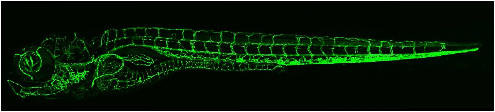
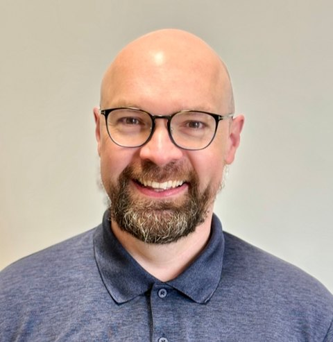
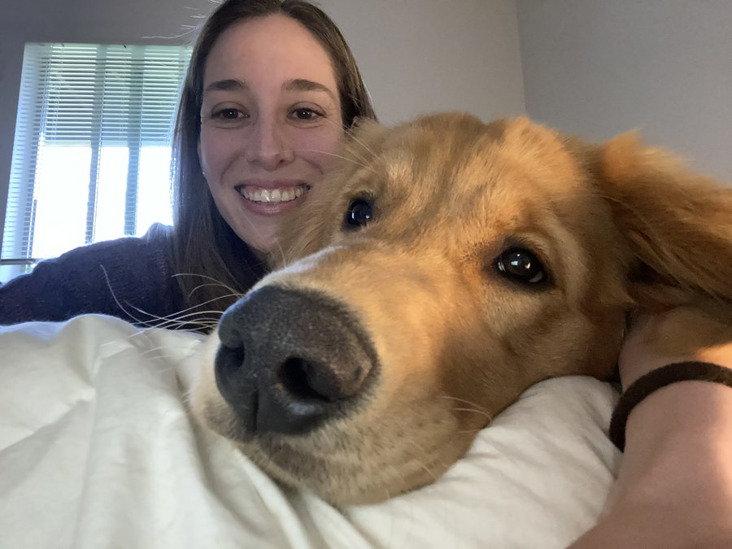
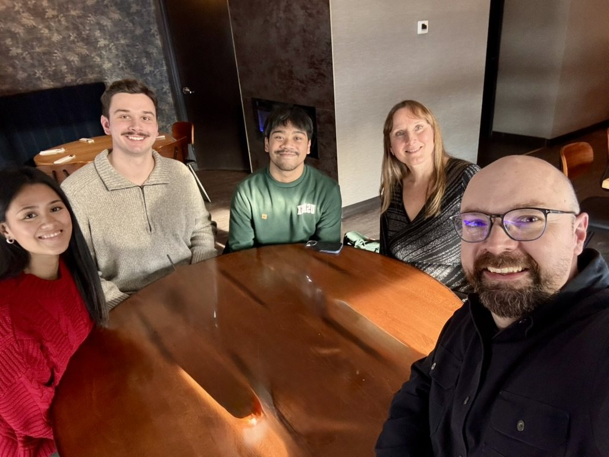
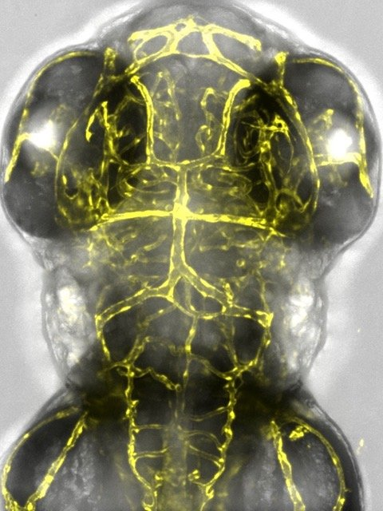
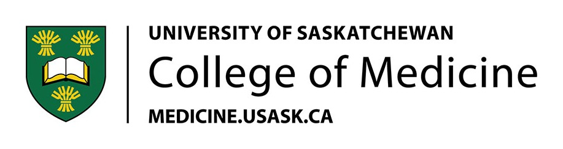

01 · BLOOD
Angiogenesis & blood vessel patterning
How endothelial cells sprout, migrate, and assemble into a patterned network of arteries and veins — and the signals that tell a vessel where to grow.

We use zebrafish and mouse models, live imaging, and genetics to map how vascular networks form — and what goes wrong in vascular disease.
Blood and lymphatic vessels reach nearly every tissue in the body. We study how they are built during development, how the same programs are redeployed in disease and regeneration, and how that knowledge might be turned into therapy. Zebrafish are transparent for their first days of life, letting us watch vessels form in a living animal in real time.
How endothelial cells sprout, migrate, and assemble into a patterned network of arteries and veins — and the signals that tell a vessel where to grow.
How lymphatic endothelial cells are specified and separated from the blood vasculature, and what this tells us about lymphedema and lymphatic disease.
Mapping the redundancy within the VEGF family to understand how tumors and diseased tissue escape anti-VEGFA therapies — and engineering tools to block that escape.
Using zebrafish and mouse as living models to ask how vascular networks fail in disease, and how revascularization supports tissue repair and regeneration.
A small tropical fish that lets us watch blood and lymphatic vessels assemble, live, inside a developing animal.
The zebrafish (Danio rerio) is one of the most powerful models in vascular biology. Its embryos and larvae develop externally and are almost completely transparent, so an entire vascular network can be imaged as it forms in a living animal — at a resolution and over a timescale that simply aren't possible in mammals.
Just as importantly, the genetic toolkit is powerful. Transgenic lines light up endothelial cells and lymphatics in fluorescent colour, CRISPR/Cas9 makes gene editing fast and precise, and the core pathways that build vessels are conserved with humans. Large clutches and rapid development make zebrafish ideal for genetic screens and for asking what happens when vascular development goes wrong. That combination is exactly why we use them to study the vasculature in health and disease.

Originally from France, Sébastien trained in vascular and developmental biology and pioneered new models of vascular disease during his postdoctoral work in Germany. He now leads the lab as an Assistant Professor in the Department of Anatomy, Physiology & Pharmacology at the University of Saskatchewan, where the team uses zebrafish and mouse models to understand how the vascular system forms in health and disease.

Ana and her four-legged furry monster are transplants from the U.S. An animal lover at heart, Ana completed her B.Sc. in Biology at Rockhurst University, where she fell in love with a plate of developing zebrafish embryos. She enjoys running (slowly) across the beautiful Saskatchewan prairies with her monster, who usually drags her for miles.
In the Gauvrit lab, Ana studies the influence of key genes in the development of the lymphatic system using both zebrafish and mice. She enjoys building the transgenic tools that will facilitate this project and sweet-talking bacteria into making the genes she wants.
A few favorites from the lab — the team, and the vessels we image in living zebrafish and whole-mount tissue.


A selection from the lab and from Sébastien's earlier work. The full, up-to-date list lives on Google Scholar.
Sébastien was a guest on the University of Saskatchewan's Research Under the Scope podcast — "Fishing for Answers in Vascular Biology." Listen on Apple Podcasts →
The lab received two NSERC awards totalling $340,000 to expand USask's zebrafish facility and advance our vascular modeling work.
Philanthropy moves discovery faster than grants alone. If you'd like to help advance our research into vascular disease, I'd be glad to hear from you.
Gifts to the lab have a direct and lasting impact. Support can help us:
Whether you're an individual, a foundation, or an industry partner, gifts can be arranged through the University of Saskatchewan and directed to our work. Reach out and let's talk about what's possible.
Contact Sébastien about givingThe University of Saskatchewan's main campus is situated on Treaty 6 Territory and the Homeland of the Métis. We pay our respect to the First Nations and Métis ancestors of this place and reaffirm our relationship with one another.
Our research is made possible by the generous support of these organizations.
